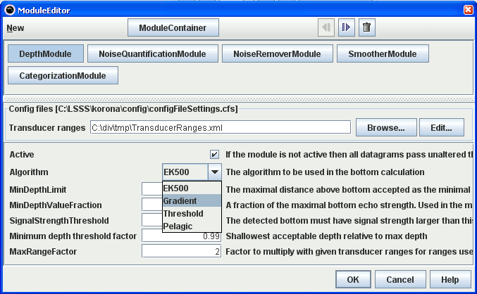

The configuration of a set of modules.
The name of a module configuration file normally ends with the suffix .cds.
The module editor is a tool for configuring the chain of computation modules, and for editing parameters of individual modules. The figure below shows the module editor with the chain of modules in the upper panel, and the parameters for the selected module in the lower panel. The order of the modules in the upper panel is left to right, top to bottom.

A module may be
The Comment module can be used for organizing setups with many modules. It can be used for adding comments and labels, inserting line breaks and defining collapsible module groups.